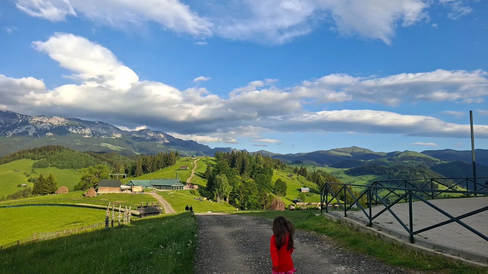
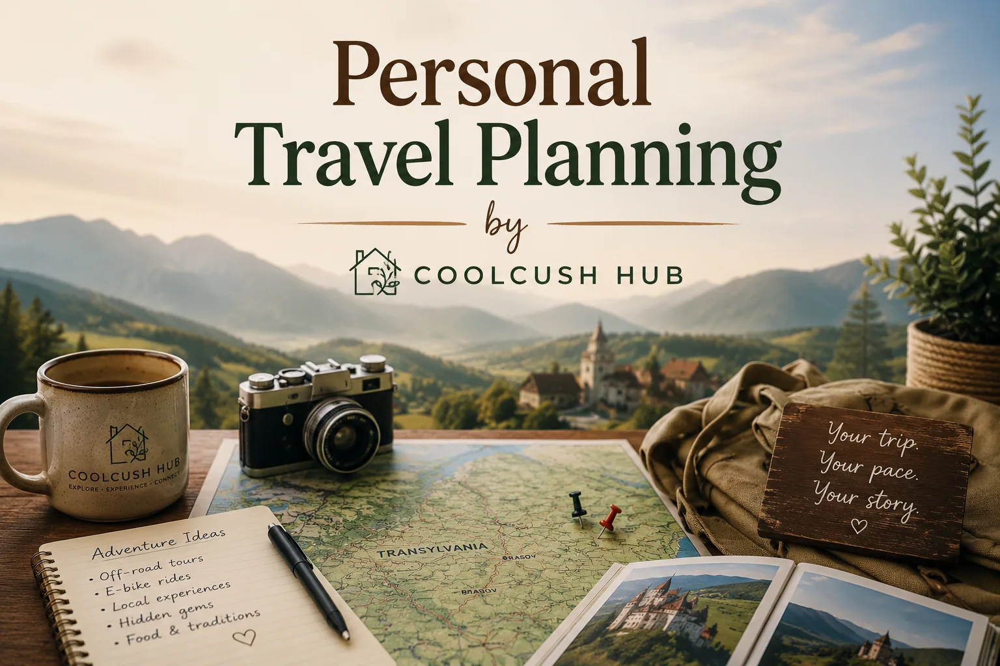

Scenic drives
Follow the mountain roads between Bran and Moieciu, stopping for village views and photographs.
See sample private itineraries with pick-up and return to your accommodation. Pick the things you’d love to try. We can put them together into a private day at your pace.
Follow the mountain roads between Bran and Moieciu, stopping for village views and photographs.

Walk between wooden gates, hay meadows and the scattered houses of Măgura and Peștera.

Build a day around Bran Castle or ask about Peleș, Râșnov and the quieter stops along the way.

Leave time for a village lunch, local cheeses and a slice of homemade pie.

Choose an easy forest ride or a longer mountain route, depending on your pace.

Spend the last hour of daylight in the hills above Moieciu with a camera and a warm layer.

Follow the gorge beneath the limestone walls of Piatra Craiului.

Ask about a ride near Râșnov with a local riding partner.

Add a zipline stop to a day in the villages, subject to local availability.

Ask about climbing sessions with a specialist local partner.

Include a stop at Cheile Grădiștei for the alpine coaster when it is operating.

Plan transfers, overnight stops and a route through Brașov or the Apuseni Mountains.